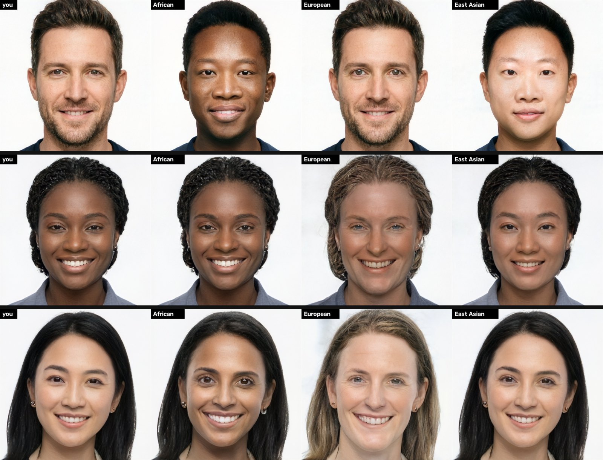
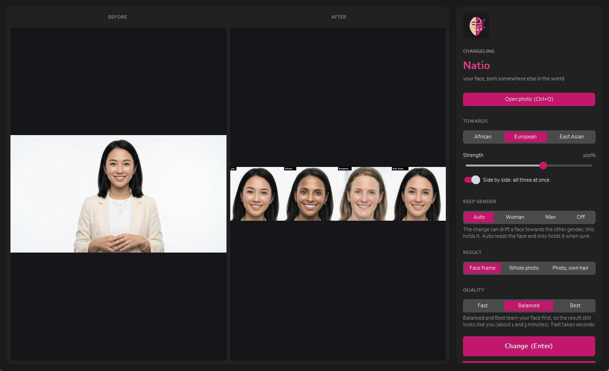

What it looks like
Each row: a person, then that person moved towards African, European and East Asian, at Balanced quality. A face asked for a look it already has barely changes. Every face is an AI-generated person who doesn't exist. Click to enlarge.

Use it
- Python 3.9 - 3.12; an NVIDIA GPU (4 GB is enough).
- Start
run.bat(orrun.ps1,run.sh). Next to Changeling Tiresias or Chronos it borrows their models. - Open photo, pick Towards and the strength, press Change.

Its limits
Three coarse directions StyleGAN2 learned (African, European, East Asian); most of the world (South Asia, the Middle East, North Africa, the Americas, the Pacific, and everyone in between) has no direction of its own. Natio moves a face to where faces from a region typically sit, never past it, opens the eyes the East Asian direction would close, and holds gender, so it doesn't turn into a caricature. Use it on yourself, on generated people, or on people who agreed; not to mock anyone.